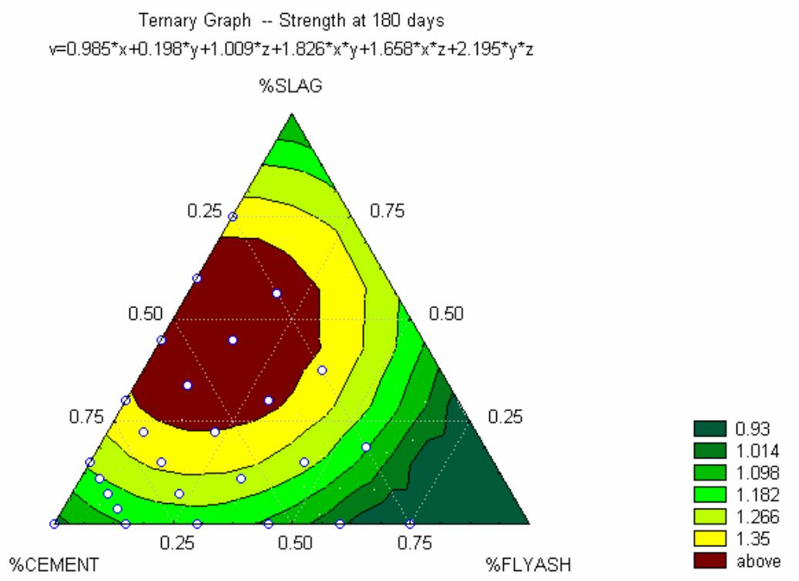
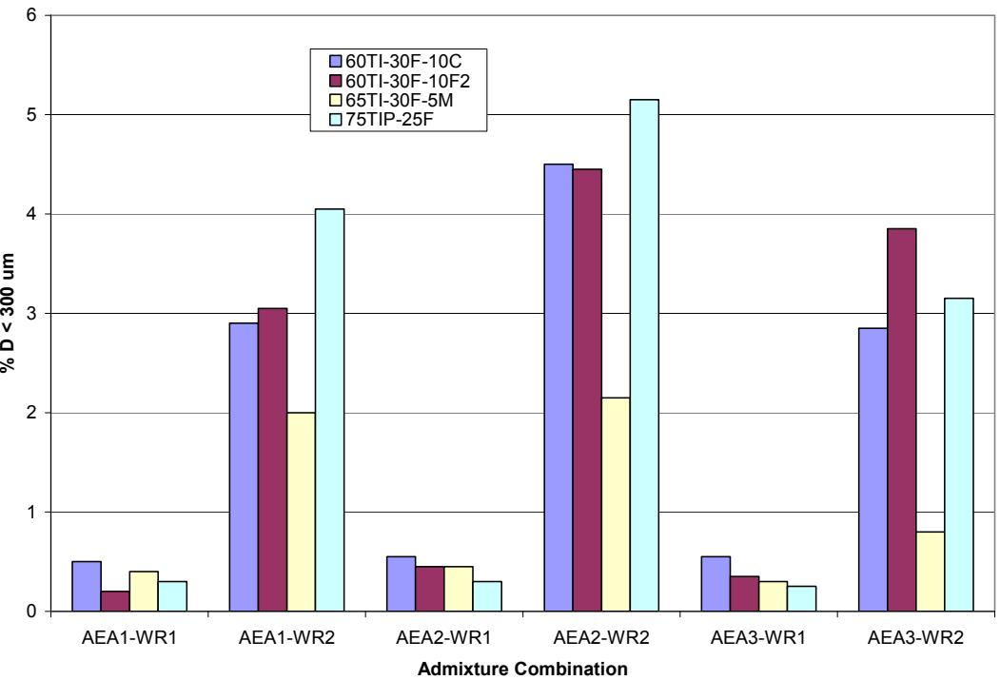
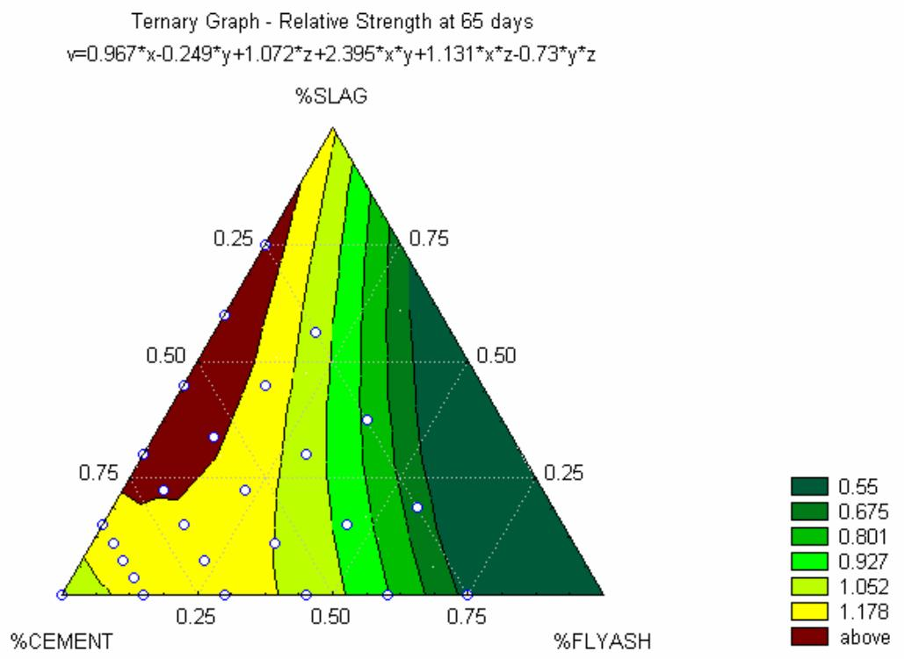
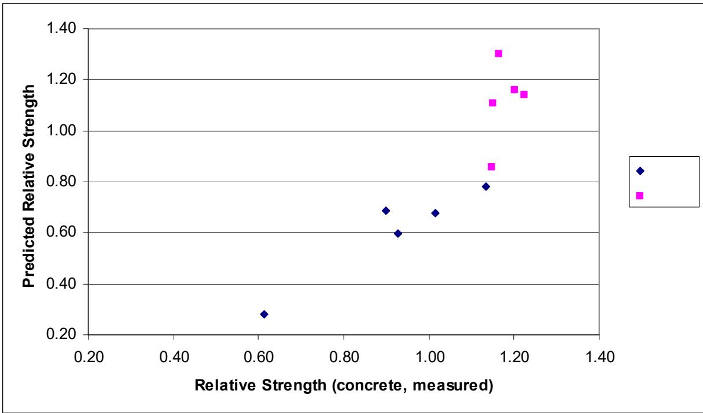
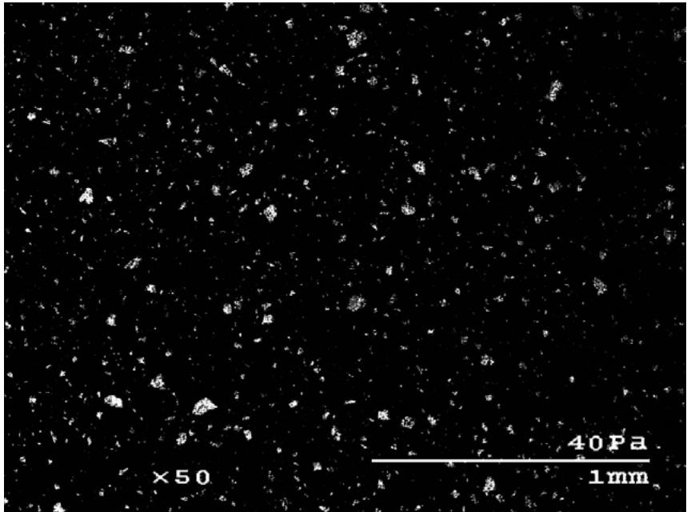

Ternary Mixture
A ternary mixture is a specific type of mix design within Mix Design & Specialty Mixtures that incorporates three distinct cementitious components, typically Portland cement and two supplementary cementitious materials (SCMs), such as fly ash and ground granulated blast-furnace slag [1]. This approach involves blending these materials to optimize the concrete’s durability, strength, or economics compared to mixtures containing only Portland cement [3]. Common combinations include portland cement + Fly Ash + Ground Granulated Blast-Furnace Slag, or blended cement (already binary) + slag [1]. Such complex mixtures are part of modern concrete practice, where the addition of these materials can alter properties such as setting time and shrinkage [7]. The primary child is the Performance-Based Specification for Ternary Mixtures, which serves as a guide specification replacing prescriptive limits with performance-based acceptance criteria [2]. This framework was developed as a key deliverable of the FHWA pooled fund study TPF-5(117).
Sources (14)
Sub-concepts (1)
Introduction and Background
Ternary mixtures are not new, as Abdun-Nur (1) documented a commercially produced ternary mixture over 40 years ago; however, they are becoming more prevalent because they can enhance performance and reduce costs. The Phase I study (Tikalsky, Schaefer et al. 2007) tested 114 mortar mixtures across 8 cement types and 7 SCM sources, finding no technical barriers to wider use in pavements, bridges, and structures [3].
Slag replacement levels typically range from 20% to over 60%, with lower ranges used when setting time or hardening constraints limit the mix design, and higher ranges employed for enhanced ASR or sulfate resistance [1]. Furthermore, optimized aggregate gradations coupled with reduced cementitious content can facilitate smoother pavements that significantly reduce vehicle fuel consumption over the pavement’s life, potentially exceeding the carbon impact of construction activities [4].
- Ternary Mixture — OPC + two SCMs (e.g., fly ash + slag)
Benefits of Ternary Mixtures
By combining the complementary properties of different SCMs, such as slag’s cementitious nature with fly ash’s pozzolanic reactivity, ternary mixtures can achieve better performance than binary mixtures alone and offer a lower cost than using a single SCM at high dosage. Phase I showed nearly all ternary combinations meet general transportation concrete strength requirements, while shrinkage was reduced 17–40% for ternary combinations with Type I cement vs. plain cement control. Furthermore, many mixtures exhibit a lower heat of hydration, which is valuable for hot weather applications [3]. Under hot weather conditions, ternary mixtures exhibit equal or less slump loss compared to plain OPC because the set time decreases for ternary systems are comparable to or less than those of OPC when temperatures rise from 70°F to 90°F [5].
 Type I, binary, and ternary cements, respectively. The initial set time decreased 0.9, 0.8, and 1.1 hours for the concrete made with Lafarge Type I/II, binary, and ternary cements, respectively. Note that the set time drops of binary/ternary cement concrete are comparable with or less than that of OPC concrete. This indicates that binary/ternary cement concrete will have equal or less slump loss to/than OPC concrete under a hot weather. It is of great benefit to use SCM concrete for hot weather concreting. (a) Holcim cement [5]
Type I, binary, and ternary cements, respectively. The initial set time decreased 0.9, 0.8, and 1.1 hours for the concrete made with Lafarge Type I/II, binary, and ternary cements, respectively. Note that the set time drops of binary/ternary cement concrete are comparable with or less than that of OPC concrete. This indicates that binary/ternary cement concrete will have equal or less slump loss to/than OPC concrete under a hot weather. It is of great benefit to use SCM concrete for hot weather concreting. (a) Holcim cement [5]
Regarding long-term compressive strength optimization, ternary systems shift toward higher slag content (approximately 25% to 70%) and lower fly ash content (0% to 30%), creating a broad plateau of optimal performance after 180 days of curing [6].

Ternary diagram illustrating relative mortar strength after 180 days of curing [6]Because high-calcium fly ashes (Type CH) often fail to provide the sulfate resistance and alkali-silica reaction expansion reduction typically associated with pozzolanic materials [1], ternary blends combining ASTM C618 Class F fly ash, ASTM C989 GGBFS, ASTM C1240 silica fume, and ASTM C618 Class N metakaolin can produce ASR-resistant concrete at lower replacement levels than those mandated by CSA A23.2-27A and Caltrans Section 90 specifications [7].
 X-ray diffactogram of silica fume (note the trace of SiC in the sample) [1]
X-ray diffactogram of silica fume (note the trace of SiC in the sample) [1]
 Bulk chemical composition ranges for some common supplementary cementitious materials (from reference 5) [1]
Bulk chemical composition ranges for some common supplementary cementitious materials (from reference 5) [1]
Optimization Challenges
Optimizing multiple properties with a single mixture is difficult, and each combination requires testing to verify performance with locally available materials. Research into ternary mixtures requires fundamental studies investigating the specific minerals formed during hydration reactions to better understand long-term durability mechanisms [1]. To ensure comprehensive performance evaluation under varying weather conditions, the bleeding rate test (ASTM C232) should be included in experimental plans for ternary mixtures [1]. Regarding chemical admixtures, sucrose-based water reducers can cause severe retardation with certain combinations (esp. Type I PC + Class C fly ash)—resolvable with polycarboxylate HRWR or blended cement [3]. Exceeding recommended water reducer dosages in ternary mixtures can cause severe early-age retardation, reducing three-day compressive strength by up to 96% compared to properly dosed mixes [3]. When using synthetic or non-vinsol resin-based air-entraining admixtures in ternary systems, engineers must account for potential bubble coalescence caused by water migration toward absorptive aggregates, which can lead to uneven air distribution and increased freeze-thaw damage risk [8].

Effect of admixture combination on the percent of air voids less than 300 μm for mixtures containing large amounts of Class F fly ash [3]Cold weather and hot weather construction require different formulation strategies. Ternary concrete mixtures can be designed to possess sufficient maturity for cold weather operations (compressive strength greater than 3,500 psi at three days at 50°F) or hot weather conditions (less than 2,500 psi at three days at 90°F) [2]. At cold curing temperatures (50°F), early-age strength development in ternary mixtures is significantly slower than in binary mixtures, whereas at high temperatures (90°F) their strength gain rates become comparable to binary systems [5]. Consequently, applying standard TTF requirements derived from normal weather conditions (70°F) to ternary mixtures cured at cold temperatures (50°F) can lead to premature and improper pavement traffic opening due to slower strength development [5]. Early-age cracking risk is generally low under average summer conditions but increases during spring or fall weather, as indicated by HIPERPAV analyses of binary and ternary cement concretes [5]. Additionally, early entry sawing joints in ternary concrete pavements may experience delayed cracking, sometimes taking months to form, which can lead contractors to perform repeat sawing operations weeks after initial construction [9]. Increasing early entry sawing joint depth from 1.0 inch to 1.5 or 2.5 inches can ensure joint cracking in ternary mix pavements where slow crack development is observed, with all joints typically cracking within approximately one month [9].
 Effects of curing temperature on initial set time of concrete [5]
Effects of curing temperature on initial set time of concrete [5]
The set time response to slag addition in ternary systems is clinker-dependent: Holcim slag can reduce the extended set times caused by fly ash, while Lafarge slag-blended cement consistently increases set time with higher SCM content [5]. Ternary mixtures can mitigate alkali-silica reaction (ASR) by allowing higher total SCM replacement levels without the risks associated with high volumes of a single SCM, particularly when using synergistic combinations like Class F fly ash, GGBFS, and silica fume [8]. However, in ternary systems, low dosages of Class C fly ash blended with Class F fly ash fail to mitigate alkali-silica reaction (ASR) expansion, whereas slag cement contents of thirty-five percent or more are effective in ASR mitigation [2]. Regarding durability and scaling, reducing the water-to-cementitious material (w/cm) ratio from 0.42 to 0.38 significantly reduces deicer scaling mass loss, allowing mixtures with up to 50% slag content to pass scaling limits regardless of test method or slag grade [10]. The presence or absence of a geotextile layer in the bottom of forms does not impact deicer scaling resistance, as bleeding is negligible in low w/cm ratio ternary mixtures [10]. While the inclusion of silica fume and metakaolin in ternary systems generally does not reduce the severity of moderate surface scaling, the addition of fly ash or slag cement effectively reduces scaling damage [2]. Finally, one-dimensional freezing during durability testing significantly reduces scaling damage in ternary mixtures by lowering temperature gradients and reducing thermal shock compared to standard freeze-thaw cycling [10].
Ternary mixtures containing Class C fly ash and slag can achieve relative mortar strengths that are modeled using quadratic regression with cross-product terms to account for synergistic interactions between the cementitious components [6].

Ternary diagram illustrating relative mortar strength after 65 days of curing [6]Phase I: Mortar Mixture Research and Predictive Modeling
Out of 114 mortar mixtures, 48 combinations were selected for Phase II concrete testing, where compressive strength correlated well with bulk chemistry (CaO and Al₂O₃ content). Regression models (R² = 0.65–0.79) were developed to predict heat signature, set time, and strength from cement chemistry and SCM composition; specifically, Grade 120 GGBFS produced significantly larger heat signatures than Grade 100, while silica fume (3% or 5%) had a negligible effect on heat signature. Although the air void structure was adequate for most mixtures, high LOI Class F fly ash required polycarboxylate HRWR for adequate air entrainment [3]. Furthermore, the datum temperature and activation energy of ternary concrete increase with higher fly ash and slag replacement levels, though using these adjusted values in Time-Temperature Factor (TTF) calculations does not alter pavement traffic opening times if proper strength correlations are maintained [5].
 Effect of fly ash on binary cement concrete heat signature [5]
Effect of fly ash on binary cement concrete heat signature [5]
Quadratic regression models with cross-product terms can predict relative mortar strength based on mass fractions of cement, fly ash, and slag, though these predictions tend to underestimate 7-day concrete strengths by approximately 30% [6]. Regarding specific chemical influences, stepwise regression analysis demonstrates that bulk chemistry variables like CaO content can predict ternary mixture strengths with correlation coefficients ranging from 0.78 to 0.45 depending on the testing age [3]. Additionally, ternary mixtures containing Class C fly ash exhibit significantly lower early-age strength than binary PC-Class C mixes, with three-day strengths ranging from 1,230 psi to 4,240 psi compared to 2,430 psi for the binary control [3]. Finally, low-alkali (LA) cement consistently outperforms high-alkali (HA) cement in compressive strength tests across various slag contents, developing approximately 10 MPa higher strengths than HA cement mixes with identical slag contents [10].

Predicted strength versus measured compressive strength for the concrete specimens [6]Phase II: Concrete Performance and Material Compatibility
During the 2011 concrete phase, 48 concrete mixtures were tested, which had been selected from the 114 Phase I mortar mixtures [7]. Regarding ASR mitigation, only mixtures containing Type IP cement (100TIP) passed all three evaluation standards, including ASTM C1567, CSA A23.2-27A, and Caltrans Section 90 [7]. While combinations of Class F fly ash with GGBFS or silica fume passed ASTM C1567 and Caltrans, they often failed CSA, and Class C fly ash demonstrated limited ASR mitigation capability regardless of the secondary SCM [7].
In terms of sulfate resistance, Class C fly ash severely reduced performance, as 7 of 22 mixture designs with Class C ash exhibited severe damage or fracture by 15 months [7]. Conversely, Class F/F2 fly ash and GGBFS provided excellent sulfate resistance, with Type IPM cement showing the least expansion at 0.02% [7]. Consequently, recommended designs for successfully mitigating both ASR and sulfate attack include ternary combinations using Type IP or TIPM cement with Class F/F2 fly ash, or Type I cement with GGBFS and Class F fly ash [7].
Phase III: Field Validation and Specifications
The 2012 field demonstration report (taylor-2012-ternary-mixtures-field-demo) validated ternary mixtures at eight construction sites (UT, KS, MI, IA, PA, NH, NY, CA), where all eight field mixtures showed low chloride ion penetrability (ASTM C1202: 500–1,800 coulombs) and compressive strengths >4,000 psi at 28 days [2]. Contractors and owners reported satisfaction with workability, finishing, and performance [2], while semi-adiabatic calorimetry was successfully deployed at field sites to detect material incompatibilities and flag changes in cementitious composition [2]. Furthermore, surface resistivity (wenner-probe-surface-resistivity) proved to be a rapid, effective field QC tool for chloride penetration resistance and was adopted by multiple state DOTs [2].
Ternary mixtures are concrete combinations that incorporate supplementary cementitious materials alongside portland cement to enhance durability [1]. To ensure these mixtures meet engineering standards, a guide specification has been developed for their use [2]. This performance-based specification defines acceptance criteria through field performance metrics rather than relying on prescriptive limits regarding the amounts or types of cementitious materials used [2].
Ternary mixtures utilizing ASTM C 1157 limestone blended cement with Class F fly ash replacement can achieve low chloride ion penetrability (ASTM C 1202) and excellent strength development, which correlates with laboratory findings of substantial durability improvements within months of placement [2].
Mixing Methods and Additives
Two-stage mixing processes, where cementitious materials are pre-mixed with water before aggregate addition, generally produce a 10 percent increase in compressive strength at 28 days compared to standard dry batch methods [11]. However, this method also results in reduced air entrainment efficiency due to fine particles absorbing the air-entraining agent, requiring increased dosage or improved application methods to maintain freeze-thaw durability [11]. In contrast, low-alkali cement reduces the required air entrainment dosage by approximately 20 percent compared to high-alkali cement due to lower alkali content and reduced demand for air-entraining agents [10]. To optimize slurry properties, high shear mixing methods using specific equipment parameters, such as speeds of 6,000 rpm and 14,000 rpm with a Waring blender, can be utilized; these high-shear techniques produce a smaller percentage of unhydrated cement particles compared to standard mixing, confirming enhanced hydration degrees when mixing time is adjusted [11]. In field applications utilizing slurry pre-mix plants like Hydromix or Jordan, MN facilities, cementitious materials are mixed with water in enclosed auger systems or horizontal chambers with rotating fingers for 30 to 60 seconds before aggregate charging [11]. This continuous mixing process allows admixtures to be sprayed onto aggregates during charging, ensuring full mixing upon arrival at the job site [11].

Computer-adjusted SEM image for the high shear mixer, 100% PC, speed two, 60 seconds [11]Workability assessments for paving concrete include the Box Test and VKelly Test, which evaluate mixture behavior under vibration to ensure adequate consolidation while maintaining sufficient stiffness to resist edge slumping after the vibration passes [4]. Specifically, the VKelly Test measures the rate of penetration of a modified Kelly ball vibrator against the square root of time, where a slope indicating 0.6 to 1.3 in./root second suggests the mixture will perform well in slipform paving [4]. Regarding ternary mixtures utilizing fly ash as a cement replacement, the resulting concrete exhibits increased flowability but suffers from insufficient green strength for shape retention unless modified with nano-clays or fibers to achieve target values between 1.3 and 2.5 kPa [12]. For instance, the addition of nano-clays (such as purified magnesium alumino silicate) at dosages of 1% to 1.5% by mass of binder significantly increases the green strength of ternary mixtures beyond that of high-cement-content controls, while maintaining flowability superior to conventional self-consolidating concrete [12]. Additionally, Magnesium oxide (MgO) can enhance the green strength and cohesion of ternary systems through ionic charge interactions, allowing the concrete to maintain flowability levels comparable to standard self-consolidating mixtures without the need for additional viscosity-modifying admixtures [12]. Furthermore, Propylene fibers improve both the green strength and flowability of ternary mixtures, with fiber-reinforced systems achieving higher flowability than fly ash-only replacements while maintaining superior shape stability for slip-form paving applications [12].
 Effect of mineral and chemical admixtures on flowability and green strength of fresh concrete with small-sized aggregates [12]
Effect of mineral and chemical admixtures on flowability and green strength of fresh concrete with small-sized aggregates [12]
Field Verification Study
A 2008 pooled-fund field study of deicer scaling resistance in concrete containing slag cement surveyed 28 sites across 6 US states, where of the 13 sites selected for coring, 8 contained ternary mixtures (portland cement + slag + Class C fly ash or slag + silica fume) [13]. Binary slag-PC mixtures and ternary slag-fly ash-PC mixtures were used in Iowa pavements, while ternary slag-silica fume-PC mixtures were standard for New York bridge decks, confirming the widespread adoption of ternary systems in wet-freeze climates [13]. In field applications, ternary mixtures containing slag and silica fume have been observed to exhibit higher scaling mass loss values compared to other combinations when subjected to deicer salt exposure; specifically, a mixture composed of portland cement, 20% slag, and 6% silica fume was identified as the only one among tested sites to exceed a scaling mass loss threshold of 1.5 lbs/yd² [13]. The diffusion coefficients for ternary mixtures in field environments range from approximately 5.6E-12 m²/s to 1.4E-13 m²/s, indicating variability in chloride penetration resistance that is not directly correlated with the specific amount of slag used in the mixture [13].
 Example of chloride profile test results (before and after scaling tests) [13]
Example of chloride profile test results (before and after scaling tests) [13]
Portable X-ray fluorescence (XRF) devices can estimate the proportions of cementitious materials in fresh concrete by analyzing elemental oxide compositions, though accuracy is significantly reduced when applied to heterogeneous mortar samples compared to homogeneous paste [14]. In ternary mixtures, the ‘Balance’ value reported by portable XRF devices corresponds roughly to the water content, but including this moisture variable in proportion calculations increases prediction errors for supplementary cementitious material dosages [14]. Additionally, because the detection depth of portable XRF beams is insufficient to fully penetrate concrete samples, there is an underestimation of sand content; therefore, accurate SCM proportion estimation requires assuming a fixed sand content between 12% and 18% by mass [14].
 The relationship between cumulative error and calculated SCM content [14]
The relationship between cumulative error and calculated SCM content [14]
Related
- Supplementary Cementitious Materials
- Blended Cement
- Pozzolanic Reaction
- Heat Signature
- Air Void Analyzer
- Ground Granulated Blast-Furnace Slag
- Silica Fume
- Performance-Based Specification for Ternary Mixtures
References
- S. Schlorholtz, "Development of Performance Properties of Ternary Mixes: Scoping Study (Phase 1)," Center for Portland Cement Concrete Pavement Technology, Iowa State University, Ames, IA, Rep. DTFH61-01-X-00042 (Project 13), 2004. [Online]. Available: https://www.cptechcenter.org/wp-content/uploads/2018/03/ternary_mixes.pdf
- P. Taylor, P. Tikalsky, K. Wang, G. Fick, and X. Wang, "Development of Performance Properties of Ternary Mixtures: Field Demonstrations and Project Summary," National Concrete Pavement Technology Center, Ames, IA, Rep. TPF-5(117), 2012. [Online]. Available: https://www.intrans.iastate.edu/wp-content/uploads/2018/03/ternary_final_w_cvr.pdf
- P. Tikalsky, V. Schaefer, K. Wang, B. Scheetz, T. Rupnow, A. St. Clair, M. Siddiqi, and S. Marquez, "Development of Performance Properties of Ternary Mixes, Phase 1," Center for Transportation Research and Education, Ames, IA, Rep. TPF-5(117), 2007. [Online]. Available: https://www.intrans.iastate.edu/research/completed/development-of-performance-properties-of-ternary-mixes-phase-1/
- J. Gross, J. Weiss, T. Ley, P. Taylor, N. Weitzel, T. Van Dam, G. Smith, and C. Jones, "Performance-Engineered Concrete Paving Mixtures," National Concrete Pavement Technology Center, Iowa State University, Ames, IA, Rep. TPF-5(368), 2022. [Online]. Available: https://www.intrans.iastate.edu/wp-content/uploads/2023/04/performance-engineered_concrete_paving_mixtures_w_cvr.pdf
- K. Wang and Z. Ge, "Evaluating Properties of Blended Cements for Concrete Pavements," Department of Civil, Construction and Environmental Engineering, Iowa State University, Ames, IA, 2003. [Online]. Available: https://www.intrans.iastate.edu/wp-content/uploads/2018/03/blended_cements-1.pdf
- S. Schlorholtz, K. Wang, J. Hu, and S. Zhang, "Materials and Mix Optimization Procedures for PCC Pavements," CTRE, Iowa State University, Ames, IA, Rep. TR-484, 2006. [Online]. Available: https://www.intrans.iastate.edu/wp-content/uploads/2018/03/mco-final.pdf
- P. Tikalsky, P. Taylor, S. Hanson, and P. Ghosh, "Development of Performance Properties of Ternary Mixtures: Laboratory Study on Concrete," National Concrete Pavement Technology Center, Ames, IA, Rep. TPF-5(117), 2011. [Online]. Available: https://www.intrans.iastate.edu/research/completed/development-of-performance-properties-of-ternary-mixtures-laboratory-study-on-concrete/
- J. Grove, F. Bektas, and H. Gieselman, "Southeast Michigan Local Road Concrete Pavement Durability Study," National Concrete Pavement Technology Center, Ames, IA, 2006. [Online]. Available: https://www.cptechcenter.org/wp-content/uploads/2018/03/mi_pavement_durability.pdf
- K. Wang, J. Hu, F. Bektas, P. Taylor, and H. Ceylan, "Crack Development in Ternary Mix Concrete Utilizing Various Saw Depths," National Concrete Pavement Technology Center, Ames, IA, Rep. TR-587, 2009. [Online]. Available: https://publications.iowa.gov/19999/1/IADOT_tr_587_Crack_Development_Ternary_Mix_Concrete_Saw_Depths_February_2009.pdf
- R. D. Hooton and D. Vassilev, "Deicer Scaling Resistance of Concrete Mixtures Containing Slag Cement, Phase 2," National Concrete Pavement Technology Center, Ames, IA, Rep. TPF-5(100), 2012. [Online]. Available: https://www.intrans.iastate.edu/research/completed/deicer-scaling-resistance-of-concrete-pavements-bridge-decks-and-other-structures-containing-slag-cement-phase-2-evaluation-of-different-laboratory-scaling-test-methods/
- T. D. Rupnow, V. R. Schaefer, K. Wang, and B. L. Hermanson, "Improving PCC Mix Consistency and Production Rate through Two-Stage Mixing," Center for Transportation Research and Education, Ames, IA, Rep. TR-505, 2007. [Online]. Available: https://www.intrans.iastate.edu/wp-content/uploads/2018/03/two-stage-mix-1.pdf
- K. Wang, S. P. Shah, J. Grove, P. Taylor, P. Wiegand, B. Steffes, G. Lomboy, Z. Quanji, L. Gang, and N. Tregger, "Self-Consolidating Concrete—Applications for Slip-Form Paving: Phase II," National Concrete Pavement Technology Center, Ames, IA, Rep. TPF-5(098), 2011. [Online]. Available: https://www.intrans.iastate.edu/wp-content/uploads/2018/03/SCC_Phase_2_final_report-edited_wcover.pdf
- S. Schlorholtz and R. D. Hooton, "Deicer Scaling Resistance ... Containing Slag Cement, Phase 1: Site Selection and Analysis of Field Cores," National Concrete Pavement Technology Center, Ames, IA, Rep. TPF-5(100), 2008. [Online]. Available: https://www.cptechcenter.org/wp-content/uploads/2018/03/schlorholtz_deicing_phase1.pdf
- P. C. Taylor, E. Yurdakul, and H. Ceylan, "Concrete Pavement MDA: Application of a Portable X-Ray Fluorescence Technique to Assess Concrete Mix Proportions," National Concrete Pavement Technology Center, Ames, IA, Rep. TPF-5(205), 2012. [Online]. Available: https://www.intrans.iastate.edu/research/completed/concrete-pavement-mixture-design-and-analysis/
Feedback on this page